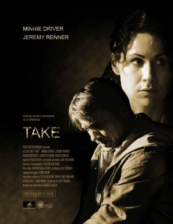

#7837 Wiener Takes All: A Dogumentary
 
 IMDB-Wertung: 6.1 / 10
IMDB-Wertung: 6.1 / 10  Metascore: 0
Metascore: 0 
Nicht eben ein Glückstag im Leben des verschuldeten Lagerarbeiters Saul. Erst verliert er seinen Job, weil man ihn beim Klauen erwischt. Dann wird er verprügelt, als er für den Kerl, dem er das Geld schuldet, ein Auto zu stehlen versucht. Immerhin staubt er eine Schusswaffe dabei ab. Unterdessen hat es die unglücklich verheiratete Putzfrau Ana auch nicht leicht mit ihrem hyperaktiven Sohnemann. Immerzu hält der Zwerg sie auf Trab. Jetzt, wo der Saul ihn als Geisel hat, würde sie ihn allerdings für keinen Preis der Welt hergeben wollen.
Der amerikanische Albtraum, zwei Existenzen vom unteren Rand der Gesellschaft drehen sich spiralförmig tiefer ins Unglück, bis sie sich am Boden des Eimers schmerzhaft überschneiden und aus kalter Tristesse die ganz große Katastrophe wird. Nicht gerade ein Feelgood-Film, dafür ein hartes Drama, das einem eins überzieht, von dem man nicht recht weiß, wo es hin will, das seinen Weg aber mit Stil, Kraft und überzeugenden Darstellern (Jeremy Renner, Minnie Driver) geht.
Jahr: 2007
Dauer: 98 Minuten
FSK: 16
Land: USA Studio: Liberation EntertainmentTonspuren: DTS - ,
Untertitel:
Auflösung: 1080p (1920x1080) Größe: 12185 MB
Genre: Thriller, Drama, Krimi
Regisseur: Charles Oliver
Drehbuch: Helmut Harun
Soundtrack: Roger Neill
Darsteller:
 Minnie Driver als Ana Nichols
Minnie Driver als Ana Nichols Jeremy Renner als Saul Gregor
Jeremy Renner als Saul Gregor- Bobby Coleman als Jesse Nichols
 Adam Rodriguez als Steven
Adam Rodriguez als Steven David Denman als Marty Nichols
David Denman als Marty Nichols- Emily Harrison als Wendy
 Bill McKinney als Benjamin Gregor
Bill McKinney als Benjamin Gregor- Jessica Stier als Mrs. Bachanas
- Rocky Marquette als Mark
- Paul Schackman als Sam
 Griff Furst als Young Mechanic
Griff Furst als Young Mechanic- Shane Woodson als Older Mechanic
 Courtenay Taylor als Truck Driver
Courtenay Taylor als Truck Driver Louis Mandylor als Terrell
Louis Mandylor als Terrell- Patrick Dollaghan als Supervising Officer
- Shane Johnson als Officer Runion
- Kendall Clement als Guard #1
- Andrew Thacher als Guard #2
 Patrick Brennan als Incensed Man
Patrick Brennan als Incensed Man- Richard Bairos als Male Customer
- Veronica Lauren als Female Patron
- Theo Nicholas Pagones als Pharmacist
- Tom Schmid als Boss
 Dale Dickey als Truck Woman
Dale Dickey als Truck Woman- Edward James Gage als Older Man
- Keith Biondi als Camper Man
 Willie C. Carpenter als Aging Man
Willie C. Carpenter als Aging Man- Allison Miller als Shoe Sales Girl
- Rob Elk als Senile Man
- Lisa Robert als Female Bartender
 Thomas F. Evans als Dealer / Poker Player
Thomas F. Evans als Dealer / Poker Player- David Foy als Policeman
 Paul Edney als Waffle House Patron (uncredited)
Paul Edney als Waffle House Patron (uncredited)- Alonzo F. Jones als Arguing Husband (uncredited)
- Jack Seal als Day Player (uncredited)
 Gary Sievers als Cafe Patron (uncredited)
Gary Sievers als Cafe Patron (uncredited)- Frank J. Tsacrios als Homeless Man (uncredited)
- Francesca P. Roberts als Principal
- Michael Ciulla als Chuck
- Ryan Layton Simmons als Bank Teller
- Todd Waring als Loud Talker
- Tyrone Benton III als SUV Son (uncredited)
- Cindy S. Benton als SUV Mom (uncredited)
- Bryeon Earle als Bar Patron (uncredited)
- Alastair Gilbert als Busboy (uncredited)
- Aaron Jennings Hartnell als Last Meal Prison Guard (uncredited)
- Katia Louise als Waitress (uncredited)
- Connie Wong als Pregnant Lady (uncredited)
Datei: X:\2007(N-Z)\Wiener Takes All A Dogumentary (2007, FSK16, 1920x1080).mkv seit 20.12.2017
Festplatte: HD 2007(A-Z)-2008(A-F)
 Es gibt insgesamt 56 Filme in der Gruppe '2007(N-Z)'
Es gibt insgesamt 56 Filme in der Gruppe '2007(N-Z)'